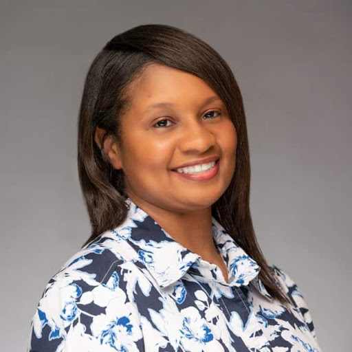

Yolanda Brown PMP, RHIT, CSM, CTFL

Professional Experience
Document Storage Systems Inc., North Palm Beach, FL 01/2016-Present
Project Coordinator-Full Time 40 hrs per week
- Participate proactively in developing and maintaining team standards, tools, and best practices
- Identify and remove impediments and prevent distractions for scrum team
- Contribute to the design, development, testing and implementation of the products through working with the Product Line Manager and product team
- Encourage transparency by using tools like Jira and making information available and transparent to stakeholders
- Continuously improve processes to improve execution
- Manage day to day activities of project; communicate with the necessary groups to ensure project deliverables are on scheduled and within parameters set forth from management
- Empower scrum team to self-organize
- Coach team members on how to use Atlassian Tools and Add-ons
- Communications Lead for the Atlassian Steering Committee Group
Document Storage Systems Inc., North Palm Beach, FL 11/2014-12/2016
Quality Assurance Analyst II-Full Time 40 hrs per week
- Develop and execute test scripts for functional and regression testing in HPQC
- Agile Team Member, attend scrum meetings, sprint planning/backlog reviews, communicate testing status to internal and external teams
- Travel to customer sites to test software in real time in the customer’s environment
- Educate the customers at the test site on new enhancements and defects fixed
- Provide additional training and answer questions about the application to internal and external customers
- Assist with training new product teammates
- Utilize the Atlassian (Jira and Confluence) and RallyDev applications to report, define and analyze defects found during testing or reported by customers
West Palm Beach VAMC, West Palm Beach, FL 07/2012-11/2014
Medical Records Administrator/Records Control Officer-Full Time 40 hrs per week
- Supervise, monitor, and access the workflow of day to day operations of Scanning, Transcription, and Release of Information activities
- Provide training to medical center staff and designated Record Liaisons throughout the medical center on the rules and regulations of the VHA Records Management Program
- Designated as an Alternate Privacy Officer
- Collaborate with Health Informatics Specialists and other services throughout the medical center to convert paper medical records to electronic utilizing the iMed Consent application in CPRS
- Test site for an enhancement patch for DSS-ROI and Vista Imaging software packages feedback for future enhancements based on technical and user expertise
- Member of Medical Record Committee, Space Committee, and Environment of Care Committee
- Technical expert for the DSS-ROI and Vista Imaging software packages and coordinate new software patch releases updates with the IT department
- Correspond and educate medical center staff regarding the process of correcting and eliminating erroneous notes and complete retractions and reassignments of notes in the electronic medical record
West Palm Beach VAMC, West Palm Beach, FL 03/2012-7/2012
TCF HIM Intern 2nd Year-Full Time 40 hrs per week
- Monitored scanning productivity and a turnaround time for scanning staff using Vista Imaging Site Report
- Monitored turnaround time for ROI requests; ensuring that requests are processed timely and accurately
- Produced reports from dictation software to create turnaround time for transcription
- Assisted VA Providers needing access to dictation software; provided them with information needed to dictate and explain how the system works
- Communicated with the transcription vendor on an as needed basis regarding productivity concerns
- Planned and prepared action plan for the Records Management section of the Privacy Compliance Assessment to develop and promote the Records Management Program
- Increased PCA score in Records Management from a no evidence of compliance (1.7) to a moderate evidence of compliance (3.1)
- Participated in survey with DSS, Inc regarding the pros and cons of the DSS-ROI software
Robley Rex VAMC, Louisville, KY 07/2010-03/2012
TCF HIM Intern-Full Time 40 hrs per week
- Generated coding productivity reports from ACM and VIP Director in order to update HIM Metrics and monitor turn-around time (TAT)
- Contributed to the training of the newest release of information (ROI) clerk regarding the process of Social Security requests using the DSS-ROI software and the Social Security electronic website
- Created scanning productivity report on a monthly basis and report to Chief of Health Information Management
- Collaborated with Records Manager regarding inventory and retirement processes of records sent to our local national archives and records administration (NARA) approved storage facility
- Selected by AHIMA to participate in the 2012 RHIT Standard Setting Study
- Recognized ROI’s role in My HealtheVet and know how to In-Person Authenticate (IPA)
- Collaborated with file room staff to complete the 2010 retirement of medical and administrative records to Neosho Records Center and Vault
- Conducted delinquent medical records reviews needed for the HIM Committee meeting agenda
- Assisted in Joint Commission Readiness preparation
- Interviewed candidates for ROI position and prepared documentation for Scanning position